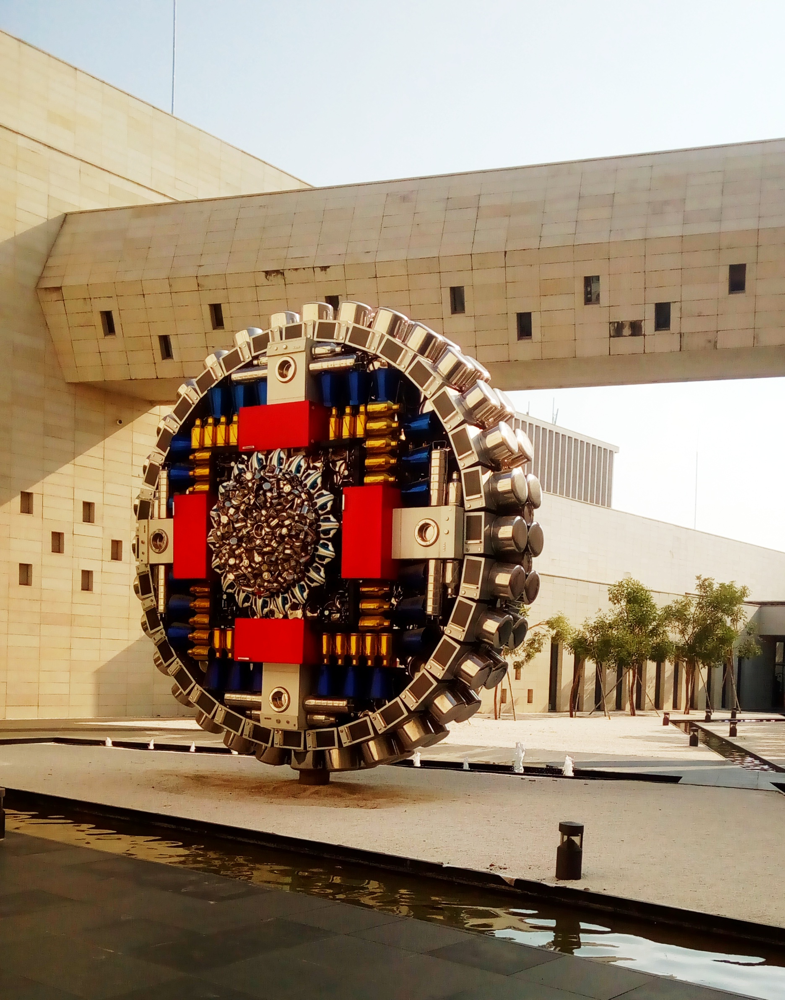

About Bihar Museum
Bihar Museum on Bailey Road in Patna is one of the most important places to visit in Bihar for history, art, and culture. The modern campus combines open courtyards, lawns, and chronological galleries that tell Bihar's story from the Stone Age through Mauryan and Gupta empires to regional folk traditions.
The museum houses remarkable collections of ancient sculpture, coins, manuscripts, and folk art. Highlights include the famous Didarganj Yakshi and galleries devoted to Pataliputra and Magadha. A children's gallery and a short history film make it engaging for families as well as serious heritage travellers.
World's Top 9 Museum — Global Recognition
In Worth a Journey's list of The World's 100 Best Museums 2026, Bihar Museum is ranked No. 9 in the world — placing it in the global top 10 alongside institutions such as Mexico's Museo Nacional de Antropología and Madrid's Museo del Prado.
- World rank: No. 9 of 100 museums worldwide
- Asia rank: No. 1 — the highest-ranked museum in Asia on the list
- India: The only Indian museum included in the top 100
The Munich-based travel guide evaluated thousands of venues across 142 countries, combining data analysis with in-person visits. Bihar Museum's spacious design, curated galleries, and depth of Bihar's heritage helped it stand out as a destination worth a journey in its own right.

What to See Inside
Allow four to five hours for a meaningful visit. Ancient sculpture galleries, regional folk art, coin and manuscript displays, and the children's gallery are spread across the main building. Many visitors pair the museum with nearby Patna landmarks such as Golghar, Patna Sahib, and Buddha Smriti Park on a capital-city day.
← Back to Places to Visit